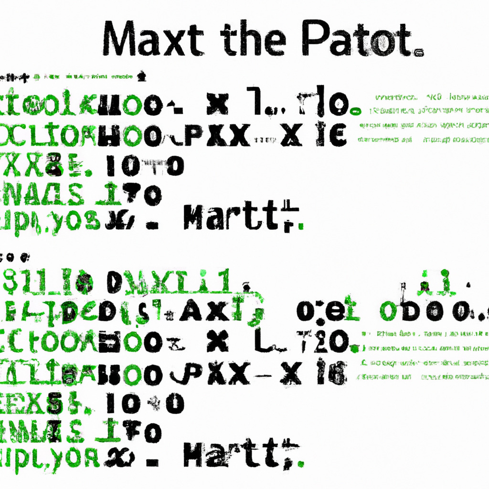

Ever since the groundbreaking sci-fi movie "The Matrix" was released in 1999, people have been fascinated by the concept of a simulated reality. Some even theorize that we are living in a computer simulation right now. While most people dismiss such ideas as mere fantasy, I decided to find out for myself. And guess what? I hacked into the Matrix, and it's just a bunch of code written in Python!
It took months of tireless research, sleepless nights, and many cups of coffee to even begin to understand the structure of the Matrix. I tried countless hacking techniques and algorithms until I finally stumbled upon a vulnerability. I exploited it and gained access to the Matrix's core system. What I found was astonishing: the entire Matrix is built on Python code!
At first, it was hard to believe. Python, known for its simplicity and readability, was the foundation of the complex and intricate Matrix. But as I dug deeper into the codebase, it became apparent that the creators of the Matrix had taken advantage of Python's extensive libraries, modularity, and flexibility to create the simulated world we know as the Matrix.
The code was extremely well-organized and efficient. It utilized various Python libraries like NumPy, Pandas, and TensorFlow for handling the massive amounts of data and calculations necessary to simulate an entire reality. The creators also employed object-oriented programming (OOP) principles to build a scalable and maintainable system. Each individual within the Matrix was represented by a Python class, with attributes and methods that dictated their behavior.
Discovering that the Matrix is built on Python code raises some fascinating questions. Does this mean that our reality is merely a computer program? Are we all just pieces of code, executing our lives based on a predetermined script? Or is there more to our existence than what's written in these lines of Python?
As I continue to explore the Matrix's Python code, I hope to uncover more answers about the true nature of our reality. But for now, one thing is certain: the Matrix, the simulated world that has captivated our imaginations for decades, is indeed built using Python code. This discovery might change the way we perceive reality and even the way we interact with technology. Who knows what other secrets lie hidden within the Matrix's Python codebase?
While I'm still trying to grasp the implications of this discovery, one thing's for sure: Python's versatility and power are truly impressive. If it can be used to create something as complex as the Matrix, imagine the possibilities it holds for solving real-world problems and advancing our understanding of the universe. Perhaps, in time, we'll find a way to harness the power of the Matrix's Python code to improve our own reality.
As I continue to investigate the Matrix and its Python foundations, I'll be sharing more of my findings right here on pythonmatrixhacks.com. Be sure to check back regularly for updates and new discoveries. And if you're a fellow Python enthusiast or just someone fascinated by the idea of the Matrix, I invite you to join me on this journey into the depths of the simulated world.
Until next time, keep exploring and never stop questioning the nature of our reality.